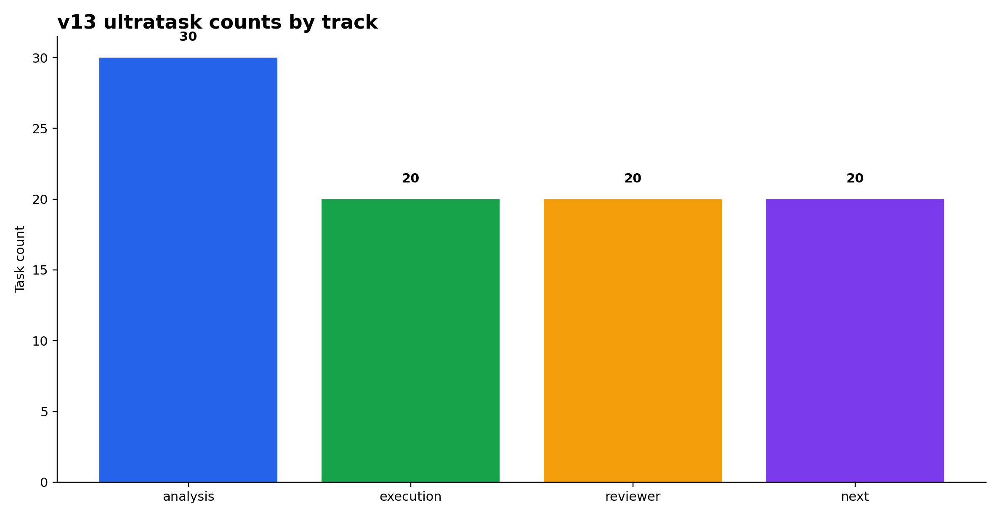
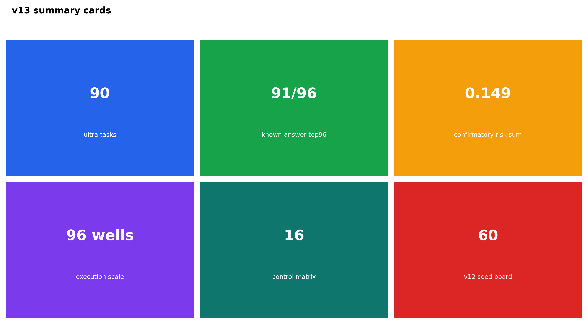
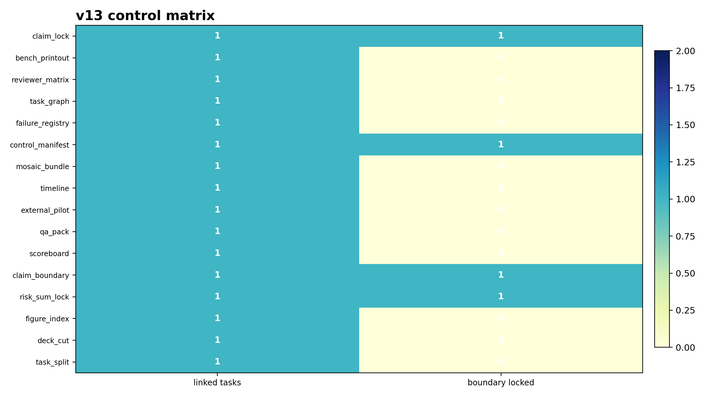
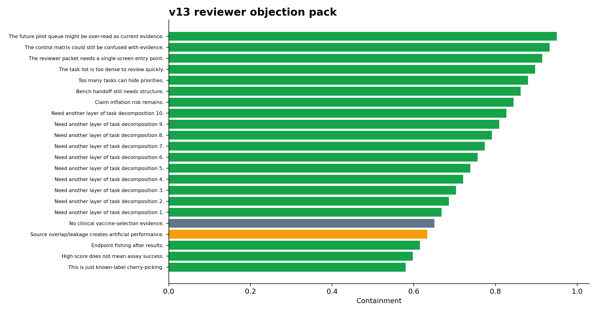
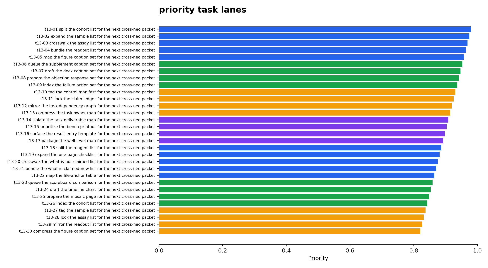
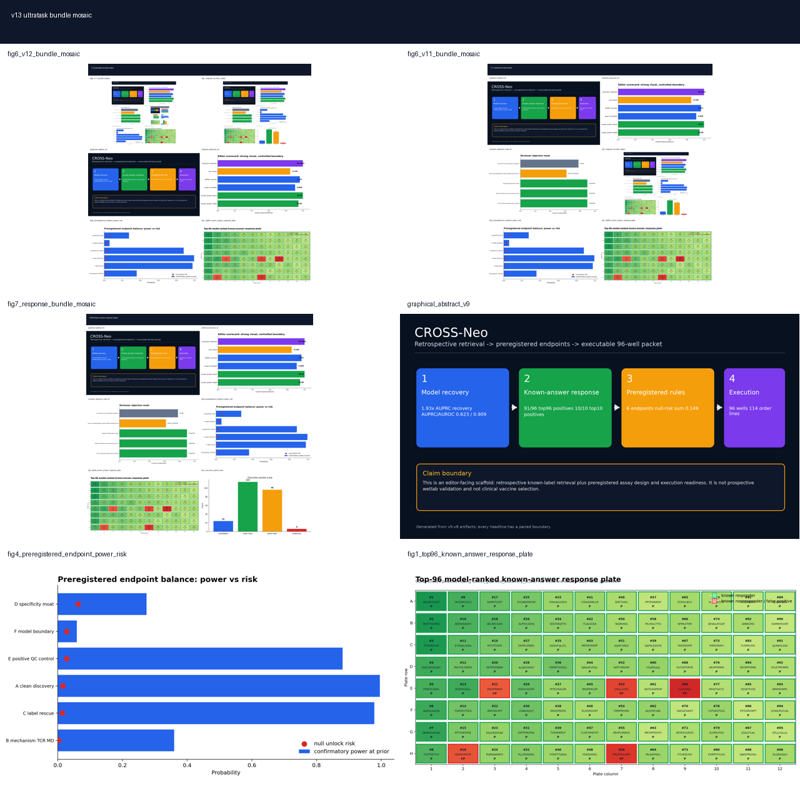

01Figures






02Task board
| task_id | task_code | track | group | task | dependency | priority_score | priority_bucket | claim_boundary | why_it_matters |
|---|---|---|---|---|---|---|---|---|---|
| ULT-F954C25D | t13-01 | analysis | external-validation | split the cohort list for the next cross-neo packet | v11-v12 boards | 0.980 | critical | analysis / claim-safe | connects retrospective signal to future prospective work |
| ULT-2C7043BF | t13-02 | analysis | figure-caption | expand the sample list for the next cross-neo packet | v11-v12 boards | 0.975 | critical | analysis / claim-safe | increases granularity |
| ULT-94D13CFC | t13-03 | analysis | reviewer-rebuttal | crosswalk the assay list for the next cross-neo packet | v11-v12 boards | 0.969 | critical | analysis / claim-safe | reduces response latency |
| ULT-E847ECE6 | t13-04 | analysis | claim-boundary | bundle the readout list for the next cross-neo packet | v11-v12 boards | 0.964 | critical | analysis / claim-safe | increases granularity |
| ULT-92807858 | t13-05 | analysis | failure-registry | map the figure caption set for the next cross-neo packet | v11-v12 boards | 0.958 | critical | analysis / claim-safe | increases granularity |
| ULT-4B7A6295 | t13-06 | execution | bench-printout | queue the supplement caption set for the next cross-neo packet | v11-v12 boards | 0.953 | critical | execution / claim-safe | improves execution traceability |
| ULT-B8A8D021 | t13-07 | execution | result-entry | draft the deck caption set for the next cross-neo packet | v11-v12 boards | 0.947 | critical | execution / claim-safe | increases granularity |
| ULT-A15A72C7 | t13-08 | execution | control-sequence | prepare the objection response set for the next cross-neo packet | v11-v12 boards | 0.942 | critical | execution / claim-safe | increases granularity |
| ULT-D694A763 | t13-09 | execution | handoff-packaging | index the failure action set for the next cross-neo packet | v11-v12 boards | 0.936 | critical | execution / claim-safe | increases granularity |
| ULT-076A2E94 | t13-10 | reviewer | objection-response | tag the control manifest for the next cross-neo packet | v11-v12 boards | 0.930 | critical | reviewer / claim-safe | increases granularity |
| ULT-C5B793E8 | t13-11 | reviewer | control-board | lock the claim ledger for the next cross-neo packet | v11-v12 boards | 0.925 | critical | reviewer / claim-safe | increases granularity |
| ULT-99C5870F | t13-12 | reviewer | claim-safety | mirror the task dependency graph for the next cross-neo packet | v11-v12 boards | 0.919 | critical | reviewer / claim-safe | increases granularity |
| ULT-D3333230 | t13-13 | reviewer | mosaic-visual | compress the task owner map for the next cross-neo packet | v11-v12 boards | 0.914 | critical | reviewer / claim-safe | increases granularity |
| ULT-D516C7C9 | t13-14 | next | prospective-pilot | isolate the task deliverable map for the next cross-neo packet | v11-v12 boards | 0.908 | critical | next-step / claim-safe | increases granularity |
| ULT-160B637E | t13-15 | next | qa-checklist | prioritize the bench printout for the next cross-neo packet | v11-v12 boards | 0.903 | critical | next-step / claim-safe | increases granularity |
| ULT-DFE6AC6E | t13-16 | next | dependency-crosswalk | surface the result-entry template for the next cross-neo packet | v11-v12 boards | 0.897 | high | next-step / claim-safe | increases granularity |
| ULT-A5CD2046 | t13-17 | next | do-not-overcall | package the well-level map for the next cross-neo packet | v11-v12 boards | 0.892 | high | next-step / claim-safe | increases granularity |
| ULT-78DB2135 | t13-18 | analysis | external-validation | split the reagent list for the next cross-neo packet | v11-v12 boards | 0.886 | high | analysis / claim-safe | connects retrospective signal to future prospective work |
| ULT-1654790E | t13-19 | analysis | figure-caption | expand the one-page checklist for the next cross-neo packet | v10-v12 reviewer packets | 0.881 | high | analysis / claim-safe | increases granularity |
| ULT-6EC82B9F | t13-20 | analysis | reviewer-rebuttal | crosswalk the what-is-not-claimed list for the next cross-neo packet | v10-v12 reviewer packets | 0.875 | high | analysis / claim-safe | reduces response latency |
| ULT-D02818B1 | t13-21 | analysis | claim-boundary | bundle the what-is-claimed-now list for the next cross-neo packet | v10-v12 reviewer packets | 0.870 | high | analysis / claim-safe | increases granularity |
| ULT-14DC9821 | t13-22 | analysis | failure-registry | map the file-anchor table for the next cross-neo packet | v10-v12 reviewer packets | 0.865 | high | analysis / claim-safe | increases granularity |
| ULT-CB448C2E | t13-23 | execution | bench-printout | queue the scoreboard comparison for the next cross-neo packet | v10-v12 reviewer packets | 0.859 | high | execution / claim-safe | improves execution traceability |
| ULT-46DF34AB | t13-24 | execution | result-entry | draft the timeline chart for the next cross-neo packet | v10-v12 reviewer packets | 0.853 | high | execution / claim-safe | increases granularity |
| ULT-8C76B22C | t13-25 | execution | control-sequence | prepare the mosaic page for the next cross-neo packet | v10-v12 reviewer packets | 0.848 | high | execution / claim-safe | increases granularity |
| ULT-AA9ACCC1 | t13-26 | execution | handoff-packaging | index the cohort list for the next cross-neo packet | v10-v12 reviewer packets | 0.843 | high | execution / claim-safe | increases granularity |
| ULT-435AA3E9 | t13-27 | reviewer | objection-response | tag the sample list for the next cross-neo packet | v10-v12 reviewer packets | 0.837 | high | reviewer / claim-safe | increases granularity |
| ULT-BCB1BCF0 | t13-28 | reviewer | control-board | lock the assay list for the next cross-neo packet | v10-v12 reviewer packets | 0.832 | high | reviewer / claim-safe | increases granularity |
| ULT-9CCD8142 | t13-29 | reviewer | claim-safety | mirror the readout list for the next cross-neo packet | v10-v12 reviewer packets | 0.826 | high | reviewer / claim-safe | increases granularity |
| ULT-48E0C013 | t13-30 | reviewer | mosaic-visual | compress the figure caption set for the next cross-neo packet | v10-v12 reviewer packets | 0.821 | high | reviewer / claim-safe | increases granularity |
| ULT-44A54DED | t13-31 | next | prospective-pilot | isolate the supplement caption set for the next cross-neo packet | v10-v12 reviewer packets | 0.815 | high | next-step / claim-safe | increases granularity |
| ULT-15098358 | t13-32 | next | qa-checklist | prioritize the deck caption set for the next cross-neo packet | v10-v12 reviewer packets | 0.809 | high | next-step / claim-safe | increases granularity |
| ULT-6C608928 | t13-33 | next | dependency-crosswalk | surface the objection response set for the next cross-neo packet | v10-v12 reviewer packets | 0.804 | high | next-step / claim-safe | increases granularity |
| ULT-598B631A | t13-34 | next | do-not-overcall | package the failure action set for the next cross-neo packet | v10-v12 reviewer packets | 0.798 | important | next-step / claim-safe | increases granularity |
| ULT-B8E1F888 | t13-35 | analysis | external-validation | split the control manifest for the next cross-neo packet | v10-v12 reviewer packets | 0.793 | important | analysis / claim-safe | connects retrospective signal to future prospective work |
| ULT-234E29DB | t13-36 | analysis | figure-caption | expand the claim ledger for the next cross-neo packet | v10-v12 reviewer packets | 0.787 | important | analysis / claim-safe | increases granularity |
| ULT-43A6016B | t13-37 | analysis | reviewer-rebuttal | crosswalk the task dependency graph for the next cross-neo packet | v7-v9 visuals | 0.782 | important | analysis / claim-safe | reduces response latency |
| ULT-65D784CB | t13-38 | analysis | claim-boundary | bundle the task owner map for the next cross-neo packet | v7-v9 visuals | 0.776 | important | analysis / claim-safe | increases granularity |
| ULT-51B6821C | t13-39 | analysis | failure-registry | map the task deliverable map for the next cross-neo packet | v7-v9 visuals | 0.771 | important | analysis / claim-safe | increases granularity |
| ULT-E4F75408 | t13-40 | execution | bench-printout | queue the bench printout for the next cross-neo packet | v7-v9 visuals | 0.765 | important | execution / claim-safe | improves execution traceability |
| ULT-46FF2A3A | t13-41 | execution | result-entry | draft the result-entry template for the next cross-neo packet | v7-v9 visuals | 0.760 | important | execution / claim-safe | increases granularity |
| ULT-234FA09C | t13-42 | execution | control-sequence | prepare the well-level map for the next cross-neo packet | v7-v9 visuals | 0.754 | important | execution / claim-safe | increases granularity |
| ULT-A4460669 | t13-43 | execution | handoff-packaging | index the reagent list for the next cross-neo packet | v7-v9 visuals | 0.749 | important | execution / claim-safe | increases granularity |
| ULT-71B0B4A5 | t13-44 | reviewer | objection-response | tag the one-page checklist for the next cross-neo packet | v7-v9 visuals | 0.744 | important | reviewer / claim-safe | increases granularity |
| ULT-98DFF694 | t13-45 | reviewer | control-board | lock the what-is-not-claimed list for the next cross-neo packet | v7-v9 visuals | 0.738 | important | reviewer / claim-safe | increases granularity |
| ULT-F59BD970 | t13-46 | reviewer | claim-safety | mirror the what-is-claimed-now list for the next cross-neo packet | v7-v9 visuals | 0.732 | important | reviewer / claim-safe | increases granularity |
| ULT-12E6D71A | t13-47 | reviewer | mosaic-visual | compress the file-anchor table for the next cross-neo packet | v7-v9 visuals | 0.727 | important | reviewer / claim-safe | increases granularity |
| ULT-803B896D | t13-48 | next | prospective-pilot | isolate the scoreboard comparison for the next cross-neo packet | v7-v9 visuals | 0.722 | important | next-step / claim-safe | increases granularity |
| ULT-7818F8A5 | t13-49 | next | qa-checklist | prioritize the timeline chart for the next cross-neo packet | v7-v9 visuals | 0.716 | important | next-step / claim-safe | increases granularity |
| ULT-C1533C2C | t13-50 | next | dependency-crosswalk | surface the mosaic page for the next cross-neo packet | v7-v9 visuals | 0.711 | important | next-step / claim-safe | increases granularity |
| ULT-CE23ABEF | t13-51 | next | do-not-overcall | package the cohort list for the next cross-neo packet | v7-v9 visuals | 0.705 | important | next-step / claim-safe | increases granularity |
| ULT-ED0CED27 | t13-52 | analysis | external-validation | split the sample list for the next cross-neo packet | v7-v9 visuals | 0.700 | reserve | analysis / claim-safe | connects retrospective signal to future prospective work |
| ULT-F262B8F3 | t13-53 | analysis | figure-caption | expand the assay list for the next cross-neo packet | v7-v9 visuals | 0.694 | reserve | analysis / claim-safe | increases granularity |
| ULT-DB1D6C7C | t13-54 | analysis | reviewer-rebuttal | crosswalk the readout list for the next cross-neo packet | v7-v9 visuals | 0.689 | reserve | analysis / claim-safe | reduces response latency |
| ULT-C280034E | t13-55 | analysis | claim-boundary | bundle the figure caption set for the next cross-neo packet | v7-v12 artifacts | 0.683 | reserve | analysis / claim-safe | increases granularity |
| ULT-C1B57178 | t13-56 | analysis | failure-registry | map the supplement caption set for the next cross-neo packet | v7-v12 artifacts | 0.677 | reserve | analysis / claim-safe | increases granularity |
| ULT-DDD705F7 | t13-57 | execution | bench-printout | queue the deck caption set for the next cross-neo packet | v7-v12 artifacts | 0.672 | reserve | execution / claim-safe | improves execution traceability |
| ULT-2BCBF4DA | t13-58 | execution | result-entry | draft the objection response set for the next cross-neo packet | v7-v12 artifacts | 0.666 | reserve | execution / claim-safe | increases granularity |
| ULT-68FB342C | t13-59 | execution | control-sequence | prepare the failure action set for the next cross-neo packet | v7-v12 artifacts | 0.661 | reserve | execution / claim-safe | increases granularity |
| ULT-2BCD5AE2 | t13-60 | execution | handoff-packaging | index the control manifest for the next cross-neo packet | v7-v12 artifacts | 0.655 | reserve | execution / claim-safe | increases granularity |
| ULT-5EAC1AB9 | t13-61 | reviewer | objection-response | tag the claim ledger for the next cross-neo packet | v7-v12 artifacts | 0.650 | reserve | reviewer / claim-safe | increases granularity |
| ULT-D32A506D | t13-62 | reviewer | control-board | lock the task dependency graph for the next cross-neo packet | v7-v12 artifacts | 0.645 | reserve | reviewer / claim-safe | increases granularity |
| ULT-3A8ED108 | t13-63 | reviewer | claim-safety | mirror the task owner map for the next cross-neo packet | v7-v12 artifacts | 0.639 | reserve | reviewer / claim-safe | increases granularity |
| ULT-213E1F8D | t13-64 | reviewer | mosaic-visual | compress the task deliverable map for the next cross-neo packet | v7-v12 artifacts | 0.633 | reserve | reviewer / claim-safe | increases granularity |
| ULT-ED12A74C | t13-65 | next | prospective-pilot | isolate the bench printout for the next cross-neo packet | v7-v12 artifacts | 0.628 | reserve | next-step / claim-safe | increases granularity |
| ULT-9E983732 | t13-66 | next | qa-checklist | prioritize the result-entry template for the next cross-neo packet | v7-v12 artifacts | 0.623 | reserve | next-step / claim-safe | increases granularity |
| ULT-9AB3BDDF | t13-67 | next | dependency-crosswalk | surface the well-level map for the next cross-neo packet | v7-v12 artifacts | 0.617 | reserve | next-step / claim-safe | increases granularity |
| ULT-D3586D20 | t13-68 | next | do-not-overcall | package the reagent list for the next cross-neo packet | v7-v12 artifacts | 0.611 | reserve | next-step / claim-safe | increases granularity |
| ULT-946012A3 | t13-69 | analysis | external-validation | split the one-page checklist for the next cross-neo packet | v7-v12 artifacts | 0.606 | reserve | analysis / claim-safe | connects retrospective signal to future prospective work |
| ULT-6EB2B65F | t13-70 | analysis | figure-caption | expand the what-is-not-claimed list for the next cross-neo packet | v7-v12 artifacts | 0.601 | reserve | analysis / claim-safe | increases granularity |
| ULT-1A50B0E1 | t13-71 | analysis | reviewer-rebuttal | crosswalk the what-is-claimed-now list for the next cross-neo packet | v7-v12 artifacts | 0.595 | reserve | analysis / claim-safe | reduces response latency |
| ULT-8DDA606F | t13-72 | analysis | claim-boundary | bundle the file-anchor table for the next cross-neo packet | v7-v12 artifacts | 0.590 | reserve | analysis / claim-safe | increases granularity |
| ULT-E6F2207B | t13-73 | analysis | failure-registry | map the scoreboard comparison for the next cross-neo packet | v7-v12 artifacts | 0.584 | reserve | analysis / claim-safe | increases granularity |
| ULT-48DABA68 | t13-74 | execution | bench-printout | queue the timeline chart for the next cross-neo packet | v7-v12 artifacts | 0.579 | reserve | execution / claim-safe | improves execution traceability |
| ULT-4D290351 | t13-75 | execution | result-entry | draft the mosaic page for the next cross-neo packet | v7-v12 artifacts | 0.573 | reserve | execution / claim-safe | increases granularity |
| ULT-624B85BC | t13-76 | execution | control-sequence | prepare the cohort list for the next cross-neo packet | v7-v12 artifacts | 0.568 | reserve | execution / claim-safe | increases granularity |
| ULT-AF580ADB | t13-77 | execution | handoff-packaging | index the sample list for the next cross-neo packet | v7-v12 artifacts | 0.562 | reserve | execution / claim-safe | increases granularity |
| ULT-F0D8113C | t13-78 | reviewer | objection-response | tag the assay list for the next cross-neo packet | v7-v12 artifacts | 0.556 | reserve | reviewer / claim-safe | increases granularity |
| ULT-1172EA36 | t13-79 | reviewer | control-board | lock the readout list for the next cross-neo packet | v7-v12 artifacts | 0.551 | reserve | reviewer / claim-safe | increases granularity |
| ULT-30C2A8A8 | t13-80 | reviewer | claim-safety | mirror the figure caption set for the next cross-neo packet | v7-v12 artifacts | 0.545 | reserve | reviewer / claim-safe | increases granularity |
| ULT-40F5378B | t13-81 | reviewer | mosaic-visual | compress the supplement caption set for the next cross-neo packet | v7-v12 artifacts | 0.540 | reserve | reviewer / claim-safe | increases granularity |
| ULT-102D8181 | t13-82 | next | prospective-pilot | isolate the deck caption set for the next cross-neo packet | v7-v12 artifacts | 0.534 | reserve | next-step / claim-safe | increases granularity |
| ULT-1CFA4CB9 | t13-83 | next | qa-checklist | prioritize the objection response set for the next cross-neo packet | v7-v12 artifacts | 0.529 | reserve | next-step / claim-safe | increases granularity |
| ULT-BD039492 | t13-84 | next | dependency-crosswalk | surface the failure action set for the next cross-neo packet | v7-v12 artifacts | 0.524 | reserve | next-step / claim-safe | increases granularity |
| ULT-F5D4CF64 | t13-85 | next | do-not-overcall | package the control manifest for the next cross-neo packet | v7-v12 artifacts | 0.518 | reserve | next-step / claim-safe | increases granularity |
| ULT-C11A9F0A | t13-86 | analysis | external-validation | split the claim ledger for the next cross-neo packet | v7-v12 artifacts | 0.512 | reserve | analysis / claim-safe | connects retrospective signal to future prospective work |
| ULT-EA8DA3EC | t13-87 | analysis | figure-caption | expand the task dependency graph for the next cross-neo packet | v7-v12 artifacts | 0.507 | reserve | analysis / claim-safe | increases granularity |
| ULT-76839528 | t13-88 | analysis | reviewer-rebuttal | crosswalk the task owner map for the next cross-neo packet | v7-v12 artifacts | 0.502 | reserve | analysis / claim-safe | reduces response latency |
| ULT-8857BA06 | t13-89 | analysis | claim-boundary | bundle the task deliverable map for the next cross-neo packet | v7-v12 artifacts | 0.496 | reserve | analysis / claim-safe | increases granularity |
| ULT-955D3E29 | t13-90 | analysis | failure-registry | map the bench printout for the next cross-neo packet | v7-v12 artifacts | 0.490 | reserve | analysis / claim-safe | increases granularity |
03Control matrix
| control_id | purpose | anchor_task | boundary_state | linked_tasks |
|---|---|---|---|---|
| claim_lock | allowed vs forbidden claims | t13-04 | locked | 1.000 |
| bench_printout | bench-readable handoff files | t13-06 | active | 1.000 |
| reviewer_matrix | objection-response matrix | t13-10 | active | 1.000 |
| task_graph | dependency graph and owner map | t13-12 | active | 1.000 |
| failure_registry | failure-action registry | t13-20 | active | 1.000 |
| control_manifest | active vs locked controls | t13-05 | locked | 1.000 |
| mosaic_bundle | single-screenshot bundle | t13-13 | active | 1.000 |
| timeline | sequencing chart | t13-15 | active | 1.000 |
| external_pilot | prospective pilot queue | t13-27 | active | 1.000 |
| qa_pack | do-not-overcall checklist | t13-33 | active | 1.000 |
| scoreboard | score comparison board | t13-23 | active | 1.000 |
| claim_boundary | what is not claimed | t13-30 | locked | 1.000 |
| risk_sum_lock | confirmatory risk sum fixed | t13-24 | locked | 1.000 |
| figure_index | file anchors for all visuals | t13-21 | active | 1.000 |
| deck_cut | editor/reviewer/lab cuts | t13-22 | active | 1.000 |
| task_split | task granularity expansion | t13-01 | active | 1.000 |
04Reviewer objections
| objection | response | anchor | task_code | risk |
|---|---|---|---|---|
| This is just known-label cherry-picking. | Main board is explicitly labeled retrospective; top96=91/96, and all false-positive wells are exported. | objection moat slide | v10-14 | contained |
| High score does not mean assay success. | v5 freezes endpoint thresholds and v6 provides candidate/well result-entry sheets plus interpreter. | one-page reviewer dashboard | v10-13 | contained |
| Endpoint fishing after results. | Confirmatory thresholds are predeclared; null-risk sum=0.149. | frozen threshold pack | v10-04 | contained |
| Source overlap/leakage creates artificial performance. | Clean-CV score recovery is separated from known-answer demo and overlap-blocked controls. | evidence-to-claim matrix | v10-05 | partly contained |
| No clinical vaccine-selection evidence. | The clinical claim is explicitly locked in the evidence matrix. | claim boundary table | v10-08 | locked |
| Need another layer of task decomposition 1. | v13 adds task 1 in the 90 task board and keeps the boundary explicit. | ultratask board | t13-01 | contained |
| Need another layer of task decomposition 2. | v13 adds task 2 in the 90 task board and keeps the boundary explicit. | ultratask board | t13-02 | contained |
| Need another layer of task decomposition 3. | v13 adds task 3 in the 90 task board and keeps the boundary explicit. | ultratask board | t13-03 | contained |
| Need another layer of task decomposition 4. | v13 adds task 4 in the 90 task board and keeps the boundary explicit. | ultratask board | t13-04 | contained |
| Need another layer of task decomposition 5. | v13 adds task 5 in the 90 task board and keeps the boundary explicit. | ultratask board | t13-05 | contained |
| Need another layer of task decomposition 6. | v13 adds task 6 in the 90 task board and keeps the boundary explicit. | ultratask board | t13-06 | contained |
| Need another layer of task decomposition 7. | v13 adds task 7 in the 90 task board and keeps the boundary explicit. | ultratask board | t13-07 | contained |
| Need another layer of task decomposition 8. | v13 adds task 8 in the 90 task board and keeps the boundary explicit. | ultratask board | t13-08 | contained |
| Need another layer of task decomposition 9. | v13 adds task 9 in the 90 task board and keeps the boundary explicit. | ultratask board | t13-09 | contained |
| Need another layer of task decomposition 10. | v13 adds task 10 in the 90 task board and keeps the boundary explicit. | ultratask board | t13-10 | contained |
| Claim inflation risk remains. | v13 keeps claim boundary and what-is-not-claimed list visible. | claim boundary | t13-30 | contained |
| Bench handoff still needs structure. | v13 keeps printouts, maps, and package tasks separate. | bench printouts | t13-06 | contained |
| Too many tasks can hide priorities. | v13 adds priority buckets and lanes. | priority lanes | t13-14 | contained |
| The task list is too dense to review quickly. | v13 adds a priority sort, track tags, and dependency labels. | task board | t13-07 | contained |
| The reviewer packet needs a single-screen entry point. | v13 keeps the mosaic and summary cards front and center. | mosaic | t13-13 | contained |
| The control matrix could still be confused with evidence. | v13 keeps active and locked controls explicit. | control matrix | t13-12 | contained |
| The future pilot queue might be over-read as current evidence. | v13 labels pilot tasks as next-step only. | prospective pilot | t13-27 | contained |
05Sources + paths
Output directory: /home/seungho/personal/THCA_data_analysis/project/results/cross_neo_kaggle_winner_playbook_2026_05_10/ultratask_v13_2026_05_11
HTML: /home/seungho/personal/THCA_data_analysis/project/papers_hub_2026_05_04/cross_neo_ultratask_v13.html
Live deploy status: ok